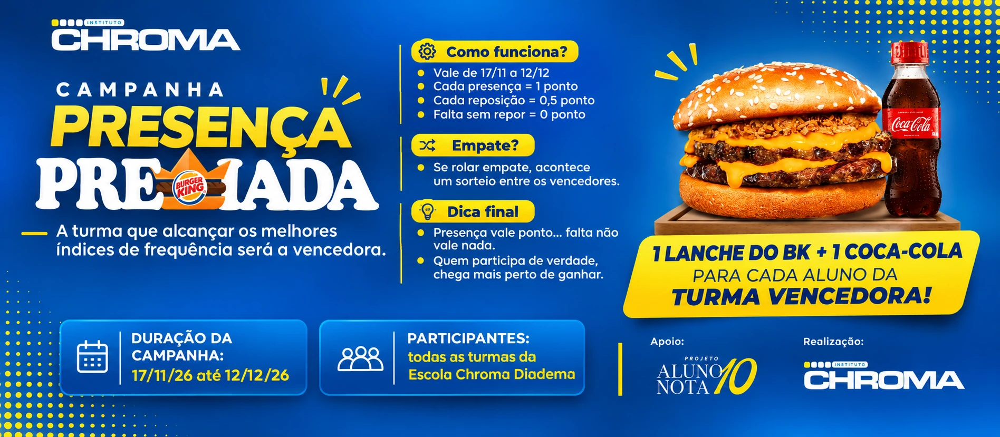

CAMPANHA · 2026
Presença Premiada
Uma iniciativa de valorização da participação e da frequência dos estudantes.
Aprendizagem prática, acompanhamento pedagógico e projetos que conectam tecnologia, conhecimento e pessoas.

EDUCAÇÃO E TECNOLOGIA · MATERIAL VISUAL INSTITUCIONAL
Nossa essência
Aqui, o estudante participa: cria, experimenta e desenvolve habilidades com orientação pedagógica.
Descubra quem somosMateriais institucionais selecionados, apresentados sem recortes que comprometam as artes originais.
Descubra como desafios e projetos práticos fazem parte do acompanhamento educacional.
Veja nossa metodologiaComunicados e campanhas oficiais da escola. Cada arte mantém seu conteúdo original.

Uma iniciativa de valorização da participação e da frequência dos estudantes.

Informação e consciência em uma data que convida à reflexão.
Uma comunicação especial da escola para encerrar o ano com novas experiências.
Converse com a equipe e saiba mais sobre a experiência educacional da Chroma.
Fale com a Chroma↗